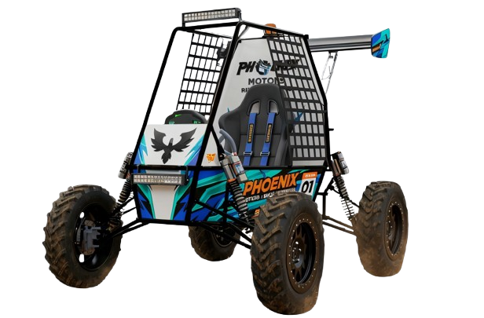
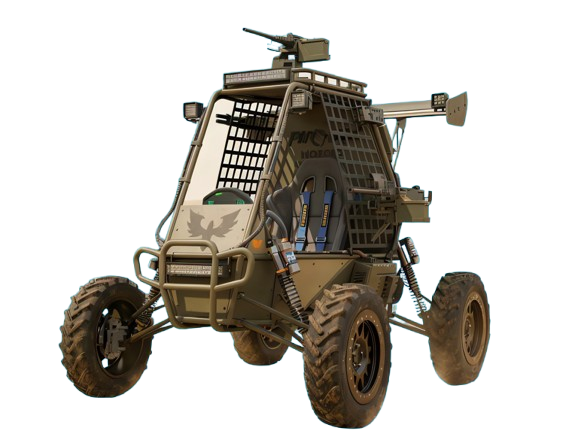
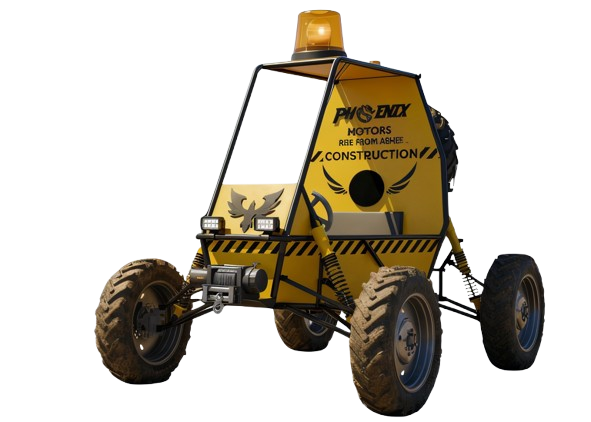

The Sisadrex 1.26 Motorsports Pack is optimized for high-performance Designed for speed and agility, this model features a lightweight structure with an aerodynamic body kit and aesthetic trims. It delivers an adrenaline-fueled ride with performance-tuned suspension, highacceleration powertrain tuning, and sport performance tyres. The cockpit is raceready, equipped with a racing harness, performance display electronics, and specialized Sport mode control logic.

The Sisadrex 1.26 Defense Pack is designed for military and defense operations,Tactical & Stealth Built for mission-critical operations, this unit is reinforced with armor-ready mounts and tactical, low-reflection body panels for maximum stealth. It ensures reliability in hostile environments with military-grade run-flat tyres, redundant wiring with EMI shielding, and endurancefocused high-torque tuning. Key tactical features include IR/blackout lighting, weapon mounting points, and restrictedaccess defense firmware.

The Sisadrex 1.26 Construction Pack is engineered for rugged utility, this pack boasts a heavy-duty reinforced cage and utility-grade protective panels designed specifically for towing and rough handling. It features load-bearing suspension and torque-focused calibration paired with industrial all-terrain tyres to conquer difficult job sites. For operational safety and efficiency, it includes tow hooks, highvisibility work lights, and load safety interlocks.